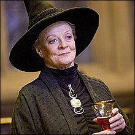

Gryffindor das Haus der mutigen und Tapferen
In den sonnendurchfluteten Türmen von Hogwarts schlägt das Herz von Gryffindor, dem Haus der Tapferen und
Mutigen. Gegründet von Godric Gryffindor, versammelt es Schüler mit feurigem Temperament, unerschütterlichem
Mut und einem unbändigen Gerechtigkeitssinn.
Gryffindors sind stets bereit, für das Gute einzustehen, selbst wenn es bedeutet, sich in Gefahr zu begeben.
Ihre Loyalität zu ihren Freunden und ihrem Haus ist unerschütterlich, und sie scheuen keine Herausforderung,
wenn es darum geht, die Schwachen zu beschützen.
Obwohl Gryffindors manchmal etwas hitzig und impulsiv sein können, ist ihre Tapferkeit und ihr Mut im Kampf
gegen das Böse unverzichtbar. In ihnen brennt ein Feuer der Gerechtigkeit, das die Welt um sie herum
erhellt.
Der Gemeinschaftsraum von Gryffindor
Gemütlich und heimelig, im siebten Stock des Schlosses gelegen, empfängt der Gryffindorgemeinschaftsraum
seine Bewohner mit warmem Licht und einem prasselnden Kaminfeuer. Wimpel in Gold und Rot schmücken die
Wände, bequeme Sessel und Sofas laden zum Verweilen ein. Ritterrüstungen und Gemälde berühmter Gryffindors
zieren den Raum und erzählen von Mut, Abenteuergeist und Zusammenhalt. Ein Ort der Geborgenheit und des
Zusammenseins, wo Freunde lachen, Geschichten erzählt und Pläne für neue Abenteuer geschmiedet werden.
Hauslehrer

Minerva McGonagall, strenge aber faire Leiterin von Gryffindor, ist eine Animagus und
Verwandlungsprofessorin in Hogwarts. Loyal zu Dumbledore und mutig im Kampf gegen Voldemort, ist sie
eine respektierte und bewunderte Lehrerin.
Gründer

Schnelle Hand, mutiges Herz: Godric Gryffindor, Hogwarts-Mitbegründer, schätzte Tapferkeit, Abenteuerlust
und Ritterlichkeit. Sein Löwenwappen ziert das Haus der Mutigen.
Hausgeist

Fast Kopfloser Nick, geisterhafter Hausgeist von Gryffindor, trägt seinen Namen standesgemäß. Bei seiner
Enthauptung knapp am Leben vorbeigekommen, wandert er nun kopflos durch Hogwarts, stets freundlich und
gesprächig.